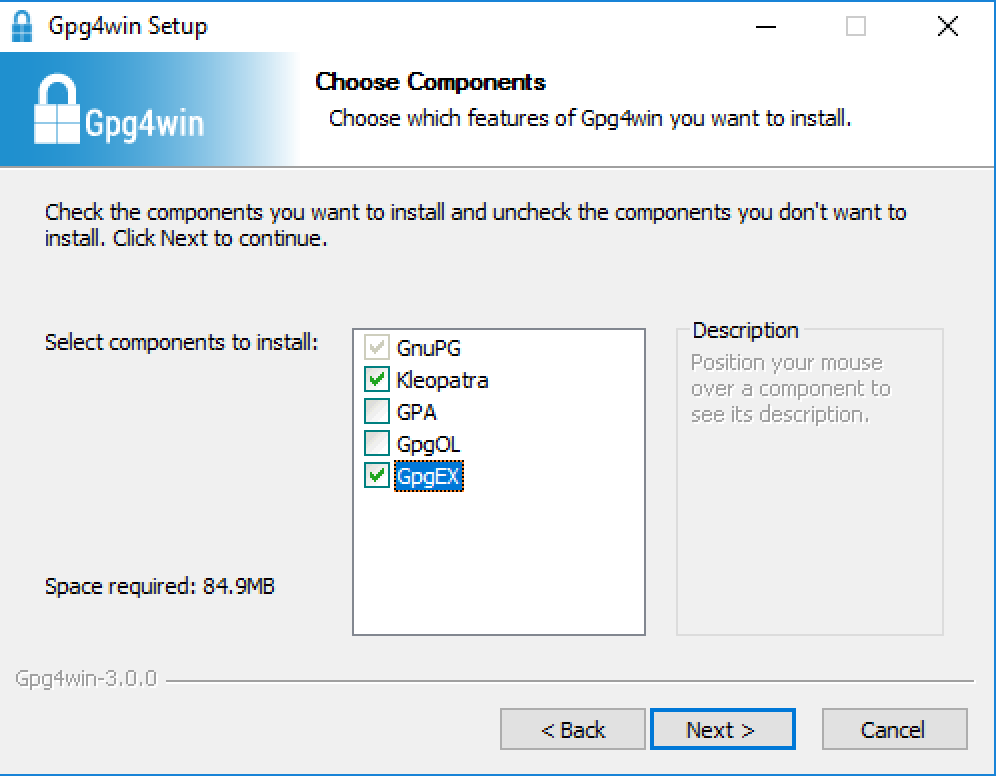
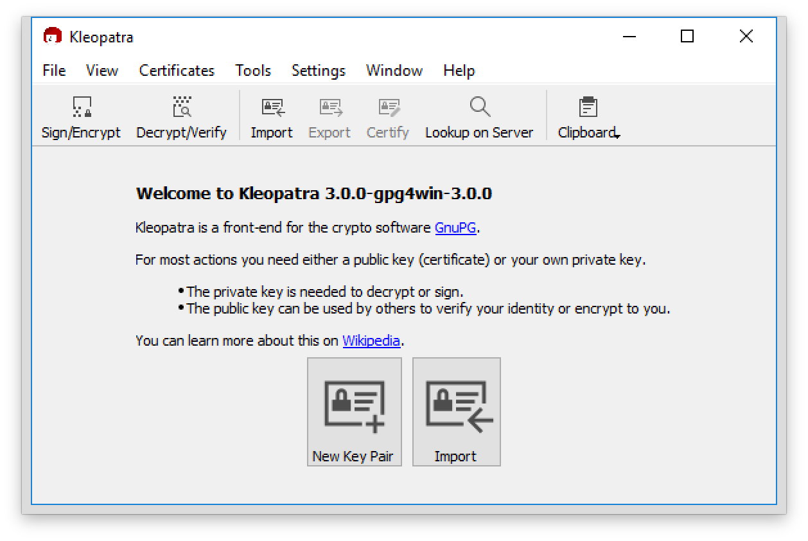
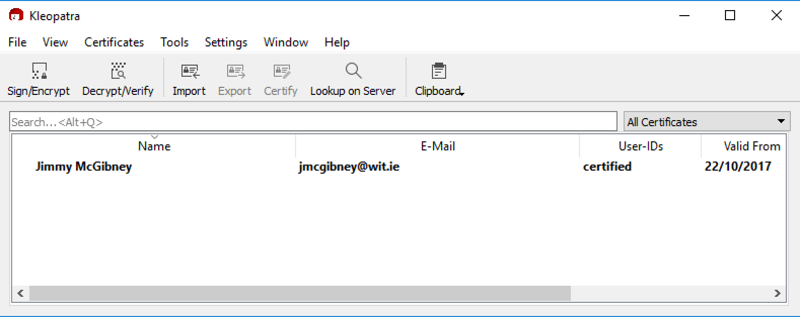
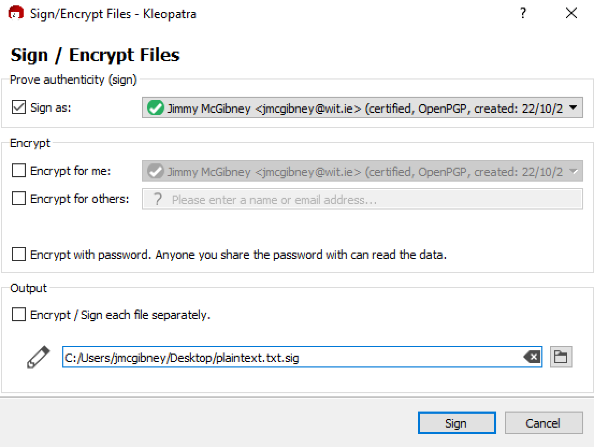

Objectives
Use a cryptographic application to manage keys and carry out encryption and authentication exercises
Pretty Good Privacy (PGP) / Gnu Privacy Guard (GPG)
PGP/GPG provides a confidentiality and authentication service that can be used for storage and messaging applications. In this practical exercise, we will use some of the basic features of an application to do the following:
- Generate a public/private key pair for yourself
- Share your public key with others
- Import public keys belonging to others
- Determine whether you trust the keys of others
- Exchange messages and files with each other that are
- Encrypted
- Signed
- Both encrypted and signed
- Decrypt and/or verify authenticity of received messages and files
The main attraction of PGP/GPG-based public key cryptography tools is that each user is responsible for the management and storage of their own keys without the need to trust a third party. This decentralised approach is attractive to people with serious privacy concerns, although this need for user involvement arguably makes the technology unsuitable as a general encryption tool for the public.
Either way, playing with PGP/GPG is a nice way to learn about public key cryptography and its benefits and limitations.
PGP background & versions
PGP was originally designed as an e-mail security application back in 1991, and is largely the product of a single person, Phil Zimmermann. He has quite a colourful past – see his personal website.
PGP has been developed commercially over the years and integrated into various security products for encrypting and signing of email, instant messages, files, devices and whole disks as well as managing keys, enabling virtual private networks (VPNs), and so on. PGP technology has been owned by various companies, including Network Associates, PGP Corporation and, currently, Symantec.
In parallel with this, since the late 1990s, Gnu Privacy Guard (GnuPG or GPG) and a range of other interoperable tools with similar functionality have been developed and maintained. This compatibility has been made possible by the OpenPGP specification (RFC 4880) which defines standard formats for storing keys and encrypted/signed data.
Key Management
One of the most interesting aspects of PGP/GPG is its distributed approach to key management. There are no key certification authorities; PGP/GPG instead supports a “web of trust”. Every user generates and distributes his/her own public key. Users sign each other’s public keys, creating an interconnected community of PGP/GPG users.
For example, Alice might physically give her public key to Bob. Bob knows Alice personally, so he signs her public key. He then gives the signed key back to her and keeps a copy for himself. When Alice wants to communicate with Carol, Alice sends Carol a copy of the key Bob signed. Now if Carol already has Bob’s public key (she got it some other time) and trusts Bob to certify other people’s keys, she then verifies Bob’s signature on Alice’s key and accepts it as valid. Bob has (indirectly) introduced Alice to Carol.
1. Installation
If using Windows, before starting, change your settings to make file extensions viewable. This is not essential, but makes it easier to distinguish between files that are encrypted and those that are not.
Locate and install a fresh version of GPG (or PGP) for your operating system of choice. Recommendations:
- Windows: Gpg4win
- MacOS: GPG Suite -or- gpg / gpg2 terminal commands
- Linux: Kleopatra (on Ubuntu: 'sudo apt install kleopatra') -or- gpg / gpg2 terminal commands
The remainder of these lab instructions assume that you are working with Gpg4win on Windows, although they are fairly easily adaptable to MacOS or Linux. Step 6 explains how to do all the steps of this lab at the command line.
Install Gpg4win by double-clicking on the downloaded file (gpg4win-3.0.0.exe). When asked to choose components, ensure that Kleopatra and GpgEX are checked. Uncheck GpgOL. 
You may choose the default install location at the next step.
2. Key Generation, Management & Exchange
Launch the Kleopatra application. This is the GUI for GPG. 
Select New Key Pair. Enter your name and email address. Use your real name (email address doesn’t really matter). If you click Advanced Settings within this dialogue, you can choose algorithms and key settings but the defaults (2048-bit RSA) are fine.
You are asked to create a passphrase that will be used to protect storage of your private key (make a note of this passphrase to make sure you remember it).
You can see your new key (certificate) in the main pane of Kleopatra. 
Select your key certificate and save a copy of the public key to disk using right-click menu (Export...). Save this to a file called yourfirstname-lastname.asc for inclusion in your Moodle upload (details at end).
Select your key certificate again and save a copy of the private key to disk using right-click menu (Export Secret Keys...). Name the file yourfirstname-lastname-private.asc. (Do not upload this to Moodle or give to anyone else as it is private to you). This file should be kept securely as a backup.
Share the first (public key) certificate file with your classmate(s).
Import the public key certificate(s) provided to you by your classmate(s). With Kleopatra you can just drag the file into the main pane. You will be prompted to certify that this is really their key - one way to check this is to verify the key certificate's cryptographic hash with the key owner. In the next step it is sufficient to certify for yourself for now. You are signing the key certificate being imported to declare your belief that it genuinely belongs to the named owner. As the signing process requires your own private key, you are prompted for your passphrase.
Have a look at the public keys exchanged. Find some PGP/GPG public keys online, either posted on people’s web pages or on specialist key servers – e.g. https://pgp.mit.edu/. You should be able to find my public key there or you can copy it directly from here. Import these into your GPG installation. Beware that there may be fake keys out there...
3. Sharing encrypted files
Note: When you encrypt a file to give to someone else, you do so with their public key. When you decrypt a file, you do so with your private key.
Import (File->Import...) classmates’ public keys.
Create a number of files (e.g. text files), on the desktop for example. Selecting a file and clicking the right mouse button gives access to the GpgEX menu. This is a convenient way to encrypt or sign files. Select Sign and Encrypt. Check Encrypt for others and select your recipient. You may uncheck the other checkboxes on this dialogue.

Send the encrypted file to your classmate. Find out if he/she can decrypt the file.
Also send your public key to a classmate. Try to decrypt a file that he/she sends to you (More GpgEX options->Decrypt).
4. Authenticating files
Note: When you verify someone else’s signed file, you do so with their public key. When you sign a file, you do so with your private key.
Sign a file (right click and select Select Sign and Encrypt) and send the signature created to a classmate along with the original file that you have signed. You can uncheck the Encrypt checkboxes this time. 
For files received from others, verify origin (More GpgEX options->Verify). You need to have their public key to do this.
5. Command-line GPG – optional
You may optionally skip this step if you have used a GPG or PGP GUI application and proceed to step 7.
Command-line GPG is included in many Linux distributions (e.g. Ubuntu) and versions for other operating systems can be downloaded from http://www.gnupg.org/download/. The instructions below are based on command-line usage on Linux.
As with most Linux commands, you can get a full list of usage options by entering:
man gpgor for more concise information, you can enter:
gpg --helpVerify which version of GPG you have with the command:
gpg --versionUse GPG to generate a key pair, import/export keys and carry out encryption and authentication – i.e. to do the same things as we did with PGP. There are numerous online tutorials with the steps required – this one is clear and concise
If you are using a virtual machine, it may be difficult for GPG to find sufficient random data to generate keys. If gpg –-gen-key stalls due to a lack of random data, enter the following commands which get it to use the Linux built-in pseudorandom generator:
sudo apt-get install rng-tools
sudo sh -c 'echo "HRNGDEVICE=/dev/urandom" >> /etc/default/rng-tools'
sudo /etc/init.d/rng-tools startSummary of main usage options:
gpg --gen-key #create a key pair
gpg --import [File] #import someone’s public key from file
gpg --list-keys #show list of keys
gpg -e -r Recipient [File] #encrypt file (giving it .gpg extension)
gpg -e --default-recipient-self [File] #encrypt file to self
gpg -d [File] #decrypt
gpg -s [File] #sign
gpg --verify [File] #verify6. Upload to Moodle
Create and upload to moodle a zip file called GPG-yourfirstname-lastname.zip to contain the following four files:
(1) Your public key
- in ASCII-armored format (the default, with .asc extension). Name it yourfirstname-lastname.asc
- in ASCII-armored format (the default, with .asc extension). Name it yourfirstname-lastname.asc
(2) A text file, plus (3) associated signature file
- Create a text file containing a message for the lecturer with the following information:
- The program and the OS that are you using;
- Your answer to the following exercise: Search for president@whitehouse.gov on a PGP key server (e.g. https://pgp.mit.edu). Based on your findings, explain one useful feature and one drawback of PGP key servers. Before signing, the file should be named yourfirstname-lastname-answer.txt
- Sign it.
- Create a text file containing a message for the lecturer with the following information:
(4) An encrypted file
- A file encrypted so that only I (J McGibney) can read it. Before encryption, this file should be named yourfirstname-lastname-secret.txt. This file can contain any text at all. You can find my public key here
7. Further Exploration
Explore the PGP application further. Experiment with certifying other people’s keys. Also experiment with trusting others’ keys (by changing Certification Trust settings).